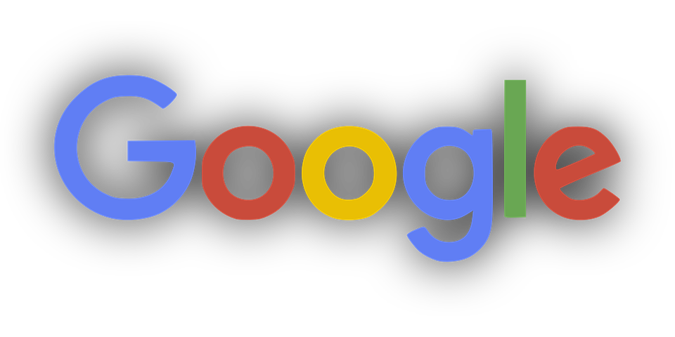

A mobile phone, known as a cell phone in North America, is a portable telephone that can make and receive calls over a radio frequency link while the user is moving within a telephone service area. Wikipedia
Follow Me OnAn electronic telecommunications device, often referred to as a cellular phone or cellphone. Mobile phones connect to a wireless communications network through radio wave or satellite transmissions. Most mobile phones provide voice communications, Short Message Service (SMS), Multimedia Message Service (MMS)

So, your company has decided to introduce animation into your marketing arsenal, but you haven’t got a clue how to start going about the process. Maybe you have an idea for a character, or a sense of the personality you want your brand to share with the public, but how do you get those concepts to become visual, moving, engaging characters, scenes and stories ready to be shared? With animation, there are many styles to choose from, but only 3 main types. There’s the traditional 2D style (hand drawn on paper or digitally), the ever-popular 3D animation and finally stop motion (or frame-by-frame) animation. Depending on the actual medium used for each, or combination of mediums, styles and techniques - the possibilities are nearly endless. For our sake, we will focus on 3D animation as the example type/medium for this article. Computer Generated Imagery (CGI) is hardly something that happens with just the click of a button. The creation of animated sequences requires a tremendous amount of time, energy and strategy. Luckily, if you invest in those, it will likely not be effort wasted.
Leverage the power of Social media to make your infographic popular
Social media are computer-mediated technologies that facilitate the creation and sharing of information, ideas, career interests and other forms of expression via virtual communities and networks. The variety of stand-alone and built-in social media services currently available introduces challenges of definition; however, there are some common features:[1] Social media are interactive Web 2.0 Internet-based applications.[1][2] User-generated content, such as text posts or comments, digital photos or videos, and data generated through all online interactions, is the lifeblood of social media.[1][2] Users create service-specific profiles for the website or app that are designed and maintained by the social media organization.[1][3] Social media facilitate the development of online social networks by connecting a user's profile with those of other individuals or groups.[1][3] Users typically access social media services via web-based technologies on desktop, computers, and laptops, or download services that offer social media functionality to their mobile devices (e.g., smartphones and tablet computers). When engaging with these services, users can create highly interactive platforms through which individuals, communities, and organizations can share, co-create, discuss, and modify user-generated content or pre-made content posted online. They introduce substantial and pervasive changes to communication between businesses, organizations, communities, and individuals.[4] Social media changes the way individuals and large organizations communicate. These changes are the focus of the emerging fields of technoself studies. Social media differ from paper-based media (e.g., magazines and newspapers) or traditional electronic media such as TV broadcasting in many ways, including quality,[5] reach, frequency, interactivity, usability, immediacy, and permanence. Social media outlets operate in a dialogic transmission system (many sources to many receivers).[6] This is in contrast to traditional media which operates under a monologic transmission model (one source to many receivers), such as a paper newspaper which is delivered to many subscribers, or a radio station which broadcasts the same programs to an entire city. Some of the most popular social media websites are Baidu Tieba, Facebook (and its associated Facebook Messenger), Gab, Google+, Myspace, Instagram, LinkedIn, Pinterest, Tumblr, Twitter, Viber, VK, WeChat, Weibo, WhatsApp, Wikia, Snapchat, These social media websites have more than 100,000,000 registered users. In America, a survey reported that 84 percent of adolescents in have a Facebook account.[7] Over 60% of 13 to 17-year-olds have at least one profile on social media, with many spending more than two hours a day on social networking sites.[8] According to Nielsen, Internet users continue to spend more time on social media sites than on any other type of site. At the same time, the total time spent on social media sites in the U.S. across PCs as well as on mobile devices increased by 99 percent to 121 billion minutes in July 2012 compared to 66 billion minutes in July 2011.[9] For content contributors, the benefits of participating in social media have gone beyond simply social sharing to building a reputation and bringing in career opportunities and monetary income.[10] Observers have noted a range of positive and negative impacts of social media use. Social media can help to improve individuals' sense of connectedness with real or online communities, and social media can be an effective communication (or marketing) tool for corporations, entrepreneurs, nonprofit organizations, including advocacy groups and political parties and governments. At the same time, concerns have been raised about possible links between heavy social media use and depression, and even the issues of cyberbullying, online harassment and "trolling". Currently, about half of young adults have been cyberbullied and of those, 20 percent said that they have been cyberbullied regularly.[11] Another survey was carried out among 7th grade students in America, which is known as the Precaution Process Adoption Model. According to this study, 69 percent of 7th grade students claim to have experienced cyberbullying and they also said that it is worse than face to face bullying.[12] However both the bully and the victim are negatively affected, the intensity, duration, and frequency are the three aspects that increase the negative effects on both of them[13]
INSTAGRAM
Instagram is a photo and video-sharing social networking service owned by Facebook, Inc. It was created by Kevin Systrom and Mike Krieger, and launched in October 2010 exclusively on iOS. A version for Android devices was released two years later, in April 2012, followed by a feature-limited website interface in November 2012, and apps for Windows 10 Mobile and Windows 10 in April 2016 and October 2016 respectively.

FACEBOOK
Facebook is an American online social media and social networking service company based in Menlo Park, California. Its website was launched on February 4, 2004, by Mark Zuckerberg, along with fellow Harvard College students and roommates, Eduardo Saverin, Andrew McCollum, Dustin Moskovitz, and Chris Hughes.
SNAPCHAT
Snapchat is a multimedia messaging app popular in North America and Europe[6] created by Evan Spiegel, Bobby Murphy, and Reggie Brown,[7] former students at Stanford University, and developed by Snap Inc., originally Snapchat Inc.
One of the principal concepts of Snapchat is that pictures and messages are only available for a short time before they become inaccessible. The app has evolved from originally focusing on person-to-person photo
TWITTER
Twitter (/ˈtwɪtər/) is an online news and social networking service on which users post and interact with messages known as "tweets". Tweets were originally restricted to 140 characters, but on November 7, 2017, this limit was doubled for all languages except Japanese, Korean, and Chinese.[11] Registered users can post tweets, but those who are unregistered can only read them. Users access Twitter through its website interface, through Short Message Service (SMS) or mobile-device application software ("app").
WHATSAPP
WhatsApp Messenger is a freeware and cross-platform messaging and Voice over IP (VoIP) service.[44] The application allows the sending of text messages and voice calls, as well as video calls, images and other media, documents, and user location.[45][46] The application runs from a mobile device though it is also accessible from desktop computers; the service uses standard cellular mobile numbers. Originally users could only communicate with other users individually or in groups of individual users,